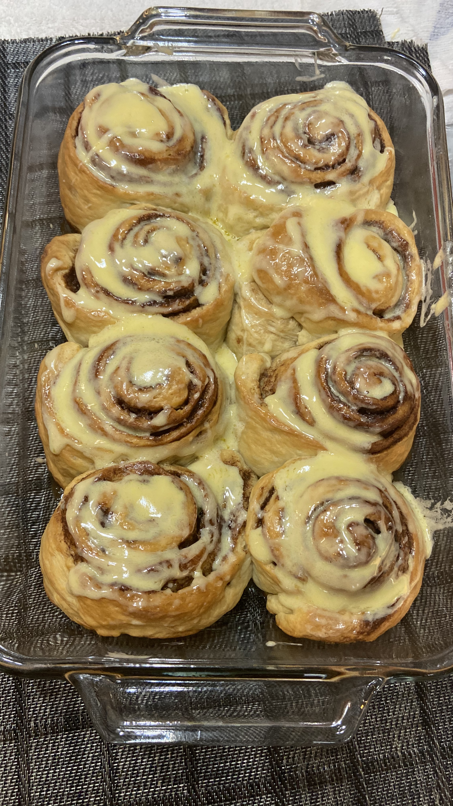

Cinnamon Roll

Description
These cinnamon rolls are heavenly. I first tried the cinnamon rolls at Starbucks.
Although they were delicious, I thought they were too expensive. So, I decided to make them
at home. It's not that tough!
Recipe adapted from Ambitious Kitchen.
Ingredients
Dough
- ¾ cup warm milk (whole milk or 2% preferred) (110 degrees F)
- 2 ¼ teaspoons quick rise or active yeast (1/4-ounce package yeast)
- ¼ cup granulated sugar
- 1 egg plus 1 egg yolk, at room temperature
- ¼ cup butter, melted (I prefer salted, but unsalted works, too)
- 3 cups bread flour, plus more for dusting
- 3/4 teaspoon salt
Topping
- 4 oz cream cheese, softened
- 3 tablespoons butter, softened
- ¾ cup powdered sugar
- ½ teaspoon vanilla extract
Filling
- 2/3 cup dark brown sugar (light brown sugar also works)
- 1 ½ tablespoons ground cinnamon
- ¼ cup butter, softened
Procedure
Water Roux
- In a small pot, cook the bread flour with water until it is thicken.
- Cover and set aside.
Bread Dough
- Mix all dry ingredients for the bread in the Kitchen Aid mixing bowl.
- In a small bowl, whisk egg together with water.
Coffee Topping
- Dissolve the coffee powder in hot water and then add vanilla essence.
- Mix all dry ingredients for the bread in the Kitchen Aid mixing bowl.
- In a small bowl, whisk egg together with water.
Filling
- Stir all ingredients for the fillng.
Home